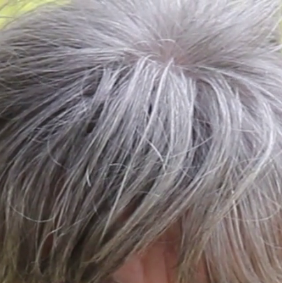
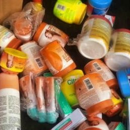
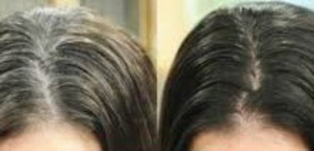
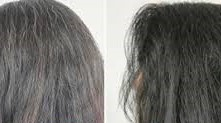
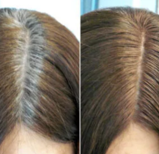
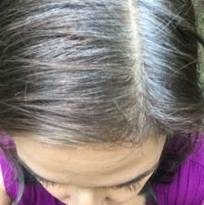

Hindi bababa sa tatlong linggo ay naalis ko ang aking puting buhok, at naibalik ang dating kulay nito. Isang resipe na natutuwa akong ibahagi sa kung sino ang interesado.
Naalala kong pinag-usapan ko ang pagkakaroon ng puting buhok sa aking ulo sa ilang mga punto. Hindi ako komportable dito ngunit pinabayaan ko nalang ang katotohanan na hindi ko maiwasan ito sa aking edad. Ngunit kamakailan lamang ang puting buhok ay sinakop na ang halos kalahati ng aking ulo, ito ay nakakabahala.
Nag-book ako ng mga tipanan sa isang doktor na lahat ng sinabi niya ay "Ako ay 56 at inaasahan na mayroon akong puting buhok at wala siyang magagawa upang matulungan ako"
Kaya naisip ko sa aking sarili, hulaan kung saan ako magsisimula paglalagay ng tina sa aking buhok! At bilang isang hindi pa naglalagay ng tina sa aking buhok noon, mahirap maunawaan kung ano ang gusto ko mula sa maraming produkto na kulay ng buhok na mabibili. Napakarami, bawat isa kung saan sa iba't ibang mga epekto nito, ang ilan ay hindi naman tinatakpan ang puting buhok. At nalaman ko ang katotohanan na kahit na naglagay ako ng tina na may pinakamahusay na kalidad, kakailanganin kong ulitin ang pamamaraan sa loob ng dalawa hanggang tatlong linggo bilang hindi nagigiliw sa puting buhok.
Sinusubukan pa ring magpasya, nagpunta ako sa internet upang maghanap ng ilang mga pagsusuri. Habang patuloy ako sa aking paghahanap sa milyon-milyong mga forum at mga patalastas, natagpuan ko ang mga website para sa isang makabagong produkto na nangangako ng pagpapanumbalik sa kulay ng buhok. Alalahanin na hindi ito isang tina, ngunit sa halip ay isang espesyal na uri ng hairspray na tila nagtataguyod sa produksyon ng melanin, na isang sangkap sa likod ng likas na pangungulay ng buhok . Kapag nagsisimulang lumabas ang puting buhok, ito ay dahil sa kakulangan ng melanin sa mga ugat nito.
Kaya sa halip na maglagay ng tina na maaaring magtapos sa pagkasira ng istraktura ng buhok ko nagpasya akong mag- order ng spray na iyon. para sa spray. Sa oras ng pag-order, mayroon silang diskwento para dito at ang presyo, napaka abot-kaya.
Sa isang linggo natanggap ko ang aking order;

Medyo naaayon ako sa paggamit, ginagamit ito sa pangalawang araw pagkatapos kong hugasan ang aking buhok, i-spray ko ito sa buong buhok ko habang nagsisimula itong matuyo at magtatapos sa pag-istilo ng buhok sa normal na paraan na ginagawa ko.
Lumipas ang unang linggo at wala akong nakitang epekto. Hindi ako nag-abala, ibig kong sabihin ay unang linggo lamang ito, iniisip ko na kakailanganin ng ilang panahon, dahil alam ko na hindi ito anumang uri ng tina. Sa aking labis na pagtataka, sa ikalawang linggo napansin ko na ang mga ugat ng aking buhok ay lumitaw na mas matingkad, tulad ng mga isang-kapat ng buhok ay matingkad at ang natitirang bahagi nito ay puti pa rin. Lumilitaw na parang ang kulay ay dahan-dahang kumalat sa buhok. Sa isang buwan, nakuha ko ang aking orihinal na kulay kastanyas na buhok.
Tumagal ito ng isang buwan, dalawang bote ng spray at natutuwa akong ginamit ko ito! Maaari akong tumingin sa salamin at mahihirapang paniwalaan na ako ay 56 taong gulang. Tingnan, tingin ba akong 56?
Payo ko sa mga kababaihan na huwag magmadali na gumamit ng mga tina, kung nakikita mo na nagkakaroon ka ng puting buhok at hindi ok dito, subukan ang spray! Siguro, sa palagay ko mas mabilis itong gumana sa mga unang yugto dahil sa aking kaso marami na akong napinsala. Sa palagay ko pa rin ay gagana rin ito para sa isang ganap na puting buhok, ang pagkakaiba ay maaaring mas matagal.
Ang pangalan ng spray ay Colour Keep, maaari itong ma-order online mula sa opisyal na website ng suplayer.
Kung mayroong sinumang nagkaroon ng karanasan sa paggamit ng spray na iyon, mangyaring ibahagi! Nais naming malaman kung ito ay gumana sa iyo tulad ng paggana nito sa akin.
Nais ko ang pinakamahusay sa iyo, Manatiling malusog, bata at maganda!!!
SURIIN ANG MGA PRESYO
Talakayan: 8 na mga komento
Lira
"Kumusta sa Lahat ang spray na iyon ay ang tunay na deal, inaamin ko!! Tingnan ang aking mga resulta"
Angela
"Wow, bakit hindi nila ito ginawa nang mas maaga? Napinsala ang aking buhok nang labis na pagtitina ng isang taon. Sabagay, susubukan ko at ipanumbalik ito ngayong alam ko na ang tungkol sa spray na ito"
Perla
"Hindi bababa sa ikaw ay 56, ako ay 25 lamang at ang aking buhok ay puno ng puting buhok. Masayang-masaya ako na natagpuan ko ang iyong paskil. Nag-order na ako ng 3 botelya, ayokong magtatapos na mukhang lola sa 25”
Marites
“Perla, kalma ka lang, naapektuhan din ako ng puting buhok noong 27. Sanhi ito ng kakulangan ng melanin sa iyong buhok, ang spray ay aktuwal na maaayos niyan."
Jeana
“Gusto kong malaman kung maari akong magpatuloy at gamitin ang spray na iyon bilang pang-iwas na hakbang dahil talagang mamamatay ako kapag makakita ako ang puting buhok sa aking ulo."
Roda
“Maganda ito, mago-order ako para sa aking nanay…. Napakaganda ng kangyang buhok at talagang umaasa ako na ang spray na ito ay gagana sa kanya”
Tesie
“Mga kaibigan, ang spray na iyon ang ating tagapagligtas!!!!!!!!!”
Katya
“Nag-order ako ng Colour Keep talagang nakakatulong ito. Napakasaya ko!!! Maraming salamat."